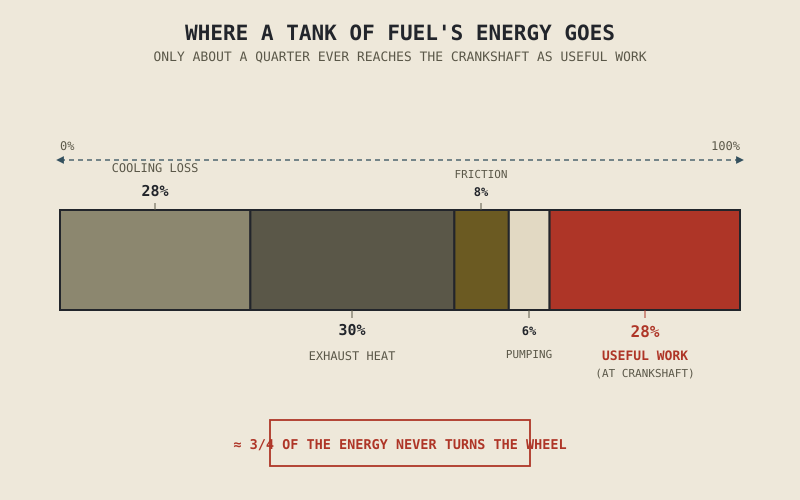

Pour a litre of fuel into a motorcycle's tank, burn all of it, and roughly a quarter of the chemical energy locked inside that litre ever reaches the crankshaft as useful rotation. The rest — the majority of it — leaves the engine as heat, before it ever gets the chance to turn a wheel, and that's before Part III's transmission losses or Part VIII's aerodynamic drag take their own share out of what's left. This isn't a sign of bad engineering. It's closer to a hard thermodynamic floor that no amount of cleverness fully escapes.
Chapter 2.9 first mentioned thermal efficiency in passing, Chapter 2.15 described cooling carrying away heat combustion produces "far more of it than the surrounding metal can tolerate," and Chapter 2.18 flagged fuel escaping unburned as a genuine two-stroke cost. This chapter finally puts all of those loose threads into one honest account: exactly where a tank of fuel's energy goes, and why so little of it was ever going to reach the rear wheel in the first place.
The Rough Split
Combustion releases the fuel's stored chemical energy all at once, and from that point forward, it splits roughly four ways. Somewhere around a quarter to a third of it leaves through the cooling system Chapter 2.15 described — heat conducted out through the cylinder walls and head, into the coolant or the air passing over the fins, precisely because Chapter 2.15 explained that unmanaged heat would otherwise damage the engine outright. A comparable share, often just as large, leaves out the exhaust system Chapter 2.14 described — the spent combustion gas is still genuinely hot when it exits the tailpipe, carrying a substantial fraction of the original energy away as heat that was never going to do mechanical work at all.
A smaller share, generally in the range of five to ten percent, is lost to mechanical friction — the same bearings, piston rings, and valve train contact points Chapter 2.5, Chapter 2.6, and Chapter 2.16 described oil working continuously to protect, at the unavoidable cost of some energy simply being consumed keeping those surfaces apart. A further small share goes to pumping losses — the energy spent moving air and exhaust gas in and out of the cylinder against the restriction of the intake and exhaust systems Chapter 2.3 and Chapter 2.14 described, and, at partial throttle, against the throttle plate itself. Only what's left after all of that — typically somewhere around a quarter of the original energy in the fuel — actually reaches the crankshaft as the useful rotation this entire part has been building toward.
Most of a tank of fuel was never going to turn the wheel. The majority of its energy leaves as heat, through the cooling and exhaust systems this part spent two full chapters explaining — not because the engine failed to capture it, but because combustion was never going to convert it in the first place.

A single bar representing 100% of a fuel's chemical energy, divided into segments for cooling loss, exhaust heat loss, friction, pumping losses, and the remaining share that reaches the crankshaft as useful work.
This Is a Thermodynamic Limit, Not a Failure
It's worth being precise about why these losses exist at all, rather than treating them as an engineering shortfall waiting to be solved. Chapter 2.9 explained that compression ratio's efficiency gains come with diminishing returns, capped by the knock threshold Chapter 2.4 described — that cap is a real, physical ceiling on how much of combustion's heat can be converted to useful expansion against the piston before the engine damages itself. No practical amount of engineering refinement changes the fundamental fact that a heat engine, converting thermal energy into mechanical work, is bound by real thermodynamic limits on how much of that heat can ever become useful motion, regardless of how well every individual component is designed.
This is why the friction, pumping, and heat losses covered in this chapter aren't a checklist of problems still waiting for a clever fix. Engineers spend enormous effort narrowing each of these losses — better lubrication, more precise combustion chamber shapes, more efficient cooling — but the largest single share, heat leaving through combustion and exhaust, is bounded by physics in a way that friction and pumping losses, being mechanical rather than thermodynamic, are not.
A Common Misconception, Cleared Up Early
It's tempting to assume that a larger, more powerful engine is inherently less efficient — wasting more energy simply because it produces more of it. Efficiency, the fraction of fuel energy actually converted to useful work, is a largely separate question from raw output, and it isn't fixed even for a single engine — it changes with RPM and load in much the same way Chapter 2.12's torque curve changed with RPM, generally peaking somewhere in an engine's mid-range under moderate-to-heavy load and dropping off at idle or under very light throttle, where a comparatively large share of each cycle's fuel goes toward simply keeping the engine running rather than producing useful output.
This is exactly what engineers track directly as brake specific fuel consumption, a measure of fuel burned per unit of useful work produced — a far more meaningful number than raw fuel economy or peak power alone, because it captures how efficiently an engine converts energy at a specific operating point, not just how much energy it happens to produce or consume in total. A large engine loafing well within its efficient range can genuinely waste a smaller fraction of its fuel than a small engine straining near its limits — displacement and efficiency are simply different questions, exactly the kind of distinction Chapter 1.6 first taught you to look for on a spec sheet.
Where This Leads
This chapter's honest accounting of friction, heat, and mechanical stress isn't just an efficiency lesson — every loss named here represents real wear accumulating somewhere in the engine, over thousands of hours of operation. Chapter 2.20 turns to exactly that: how engines actually fail, tracing specific failure modes back to the friction, heat, and combustion stresses this part has described throughout.
Key Concepts to Remember
- Only roughly a quarter of the chemical energy in fuel typically reaches the crankshaft as useful rotation; the majority is lost as heat through the cooling and exhaust systems before Part III's transmission losses or Part VIII's aerodynamic drag ever get their share.
- Cooling and exhaust heat losses together typically account for the largest share of wasted energy, roughly matching or exceeding each other, with friction and pumping losses making up a smaller remainder.
- These losses reflect real thermodynamic and mechanical limits, not an engineering shortfall — compression ratio's efficiency gains, for instance, are capped by the knock threshold Chapter 2.4 and Chapter 2.9 both described.
- Efficiency changes with RPM and load, much like the torque curve from Chapter 2.12, generally peaking under moderate-to-heavy load in the engine's mid-range rather than staying constant.
- Brake specific fuel consumption, not raw power or fuel economy alone, is the meaningful measure of how efficiently an engine converts fuel to useful work at a given operating point.
Cross-References
| ← Ch. 2.9 | First introduced thermal efficiency and its diminishing returns; this chapter shows exactly where the unconverted energy actually ends up. |
| ← Ch. 2.15 | Explained why cooling exists to manage combustion heat; this chapter quantifies how much of the fuel's energy that heat actually represents. |
| ← Ch. 2.14 | Covered the exhaust system; this chapter identifies exhaust heat loss as one of the largest single shares of wasted fuel energy. |
| ← Ch. 2.5 / 2.6 / 2.16 | Described the friction oil exists to manage; this chapter quantifies that friction's real cost in lost energy. |
| → Ch. 2.20 | How engines fail, tracing specific failure modes back to the friction, heat, and combustion stresses this part has described throughout. |